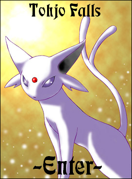

Click here to enter if you did not see image
All contents copyright © 2002 Poke-Advance, © 2005 The Tohjo Falls, © 2025 Duke. All rights reserved.
Pokémon, and all other related characters copyright © 1995-2025 Nintendo, Creatures, and GAMEFREAK.